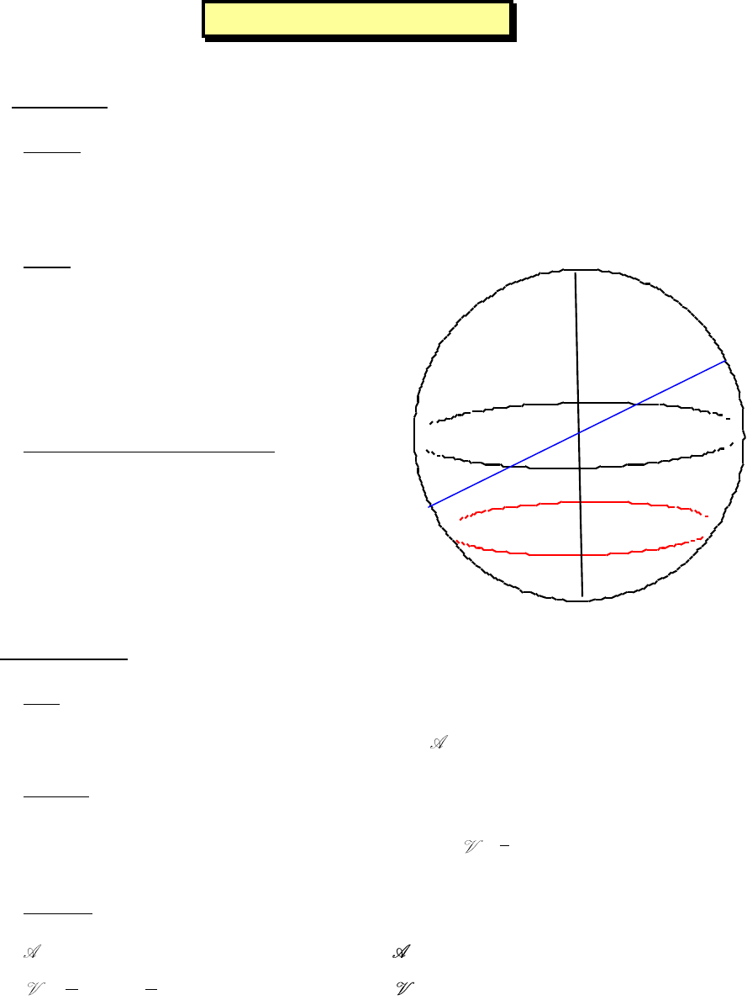

Page 1 sur 2
SPHERE
1) Définitions
a) Sphère :
La sphère de centre O et de rayon r est l’ensemble des points M de l’espace situés à égale
distance OM = r du centre O.
b) Boule :
La boule de centre O et de rayon r est
l’ensemble des points M de l’espace
situés à l’intérieur de la sphère de
centre O et de rayon r, donc tels que
OM < r.
c) Points diamétralement opposés :
Deux points A et B d’une sphère de
centre O et de rayon r sont
diamétralement opposés si O est le
milieu de [AB].
2) Aire et volume
a) Aire :
L’aire d’une sphère de centre O et de rayon r est : = 4 r².
b) Volume :
Le volume d’une boule de centre O et de rayon r est : =
4
3
r
3
.
c) Exemple :
Calculer l’aire d’une sphère de rayon r = 3 cm, puis le volume de la boule obtenue.
= 4
3² = 36 cm² 113,1 cm².
=
3
44
π 3 π 3 3 3
33
= 4 x 9 x = 36 cm
3
113,1 cm
3
.